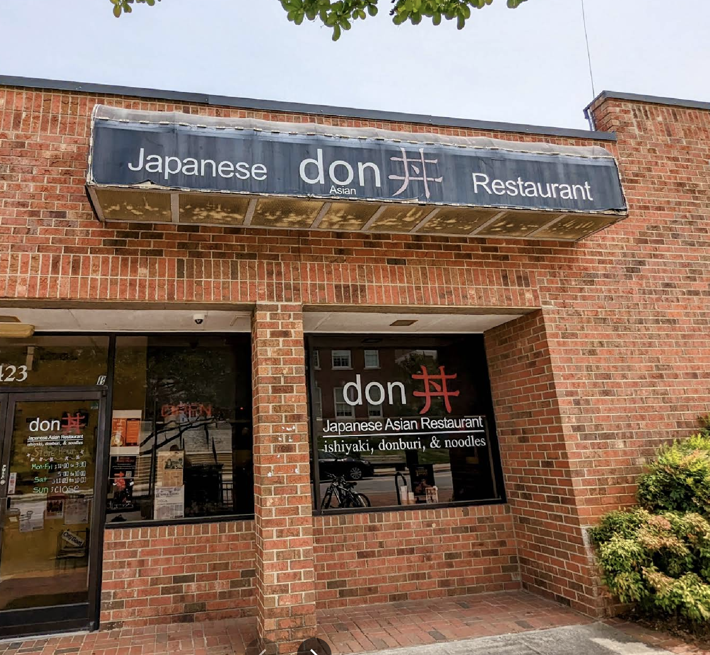
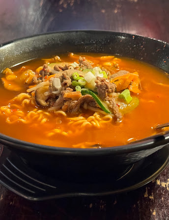
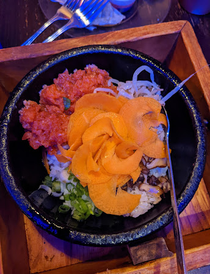
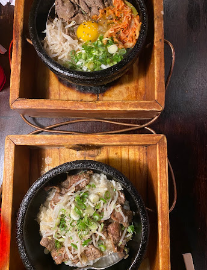

Don

Address: 423 Tate St, Greensboro, NC 27403
Specialties: Spicy Ramen, Donburi, Spicy Tuna Don
Quick Japanese comfort food near campus. Great for a warm meal between classes.
Spicy Ramen
Rich broth with a spicy kick. Perfect for colder days.
Spicy Tuna Don
Fresh tuna over rice with a flavorful spicy sauce.
Donburi
A comforting Japanese rice bowl topped with savory ingredients.
Don – Contact Phone & Hours
Phone: (336) 370-9677
Hours:
Monday–Thursday: 11:00 AM – 3:30 PM
5:00 PM – 10:00 PM
Friday: 11:00 AM – 3:30 PM
5:00 PM – 10:00 PM
Saturday: 11:30 AM – 10:00 PM
Sunday: Closed